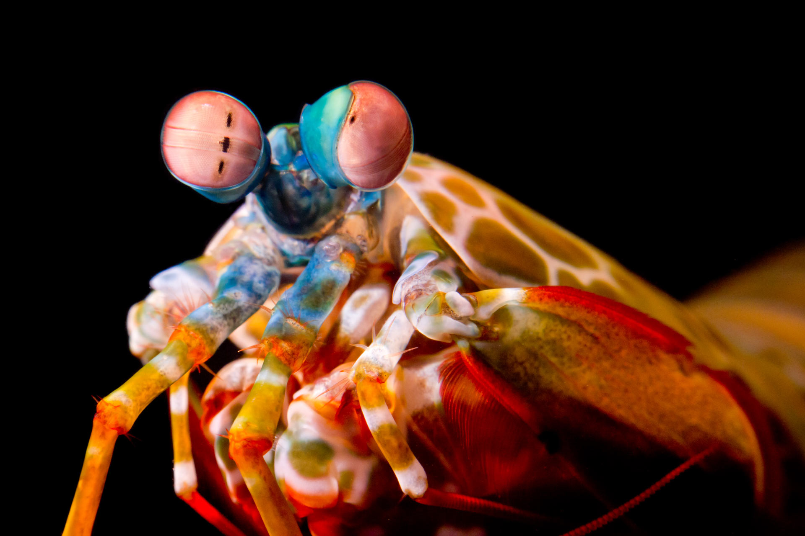

Fatos sobre Stomatopoda
Sobre o Stomatopoda
O Stomatopoda (ou estomatópode), chamados popularmente de tamarutacas ou de lacraias-do-mar no Brasil e tem o nome ciêntífico Odontodactylus scyllarus, é uma ordem de crustáceos marinhos da subclasse Hoplocarida, que agrupa cerca de 400 espécies, caracterizadas principalmente pela morfologia da segunda pata torácica, que é modificada em apêndice subquelado, lembrando uma pata de louva-a-deus.
Descrição
Os estomatópodes são predadores ativos que caçam presas com o auxílio de um sentido de visão muito apurado e capaz de interpretar polarização no espectro ultravioleta e infravermelho). Apresentam uma grande variação de tamanho, que pode ir de poucos milímetros até aproximadamente 40 cm nas espécies maiores. Eles vivem em fundo consolidado, lodoso ou ainda arenoso, onde cavam seus buracos ou aproveitam-se dos orifícios deixados por outros animais para neles se instalar. São animais exclusivamente carnívoros, alimentando-se de camarões, caranguejos, moluscos, peixes e até mesmo outros da mesma ordem. O segundo par de patas, muito desenvolvido, é usado tanto para atacar a presa como para se defender. O urópodo, quando aberto, também funciona para defesa, como um escudo, fechando a galeria em que o animal esteja instalado. A fêmea desova no local onde se abriga e, em caso de perigo, enrola os ovos como uma bola, prendendo-os junto ao corpo até encontrar um abrigo mais protegido.
Também conhecidas como esquilas ou lagosta-boxeadora, espalhadas pelas costas dos mares tropicais e subtropicais. Além das patas, elas apresentam uma silhueta característica, devido ao grande comprimento aparentemente de seu abdómen. Os ovos ficam ligados por uma massa gelatinosa que a mãe carrega contra o ventre até que eclodem, limpando-os sem parar.
Visão
Esses animais possuem o mais complexo sistema de visão de cores do mundo animal, pois enxergam 12 cores primárias, correspondentes aos 12 pigmentos distintos presentes em sua retina.
Os estomatópodes são capazes de ver 1024 cores, ou seja, 1 septilhão de cores. Em comparação, o olho humano vê 106 cores, ou seja, 1 milhão de cores apenas. A visão dos estomatópodes é sensível à luz ultravioleta, mas ainda é desconhecido se ela pode distinguir a luz infravermelha.
Mantis Shrimp Packs a Punch
Predator in Paradise
Referências
- Wikipedia : Stomatopoda
- Natureza Terraquea : Tamarutaca-Pavão
- The Oatmeal : Why the Mantis Shrimp is my favorita animal
- Bio Digital : Stomatopoda